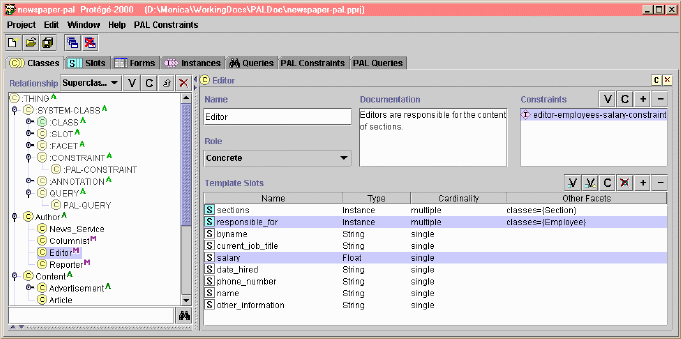
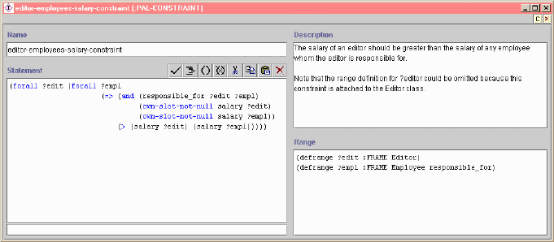
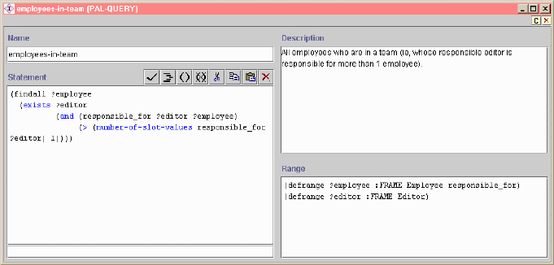

The Protégé Axiom Language (PAL) extends the Protégé-2000 knowledge modeling environment with support for writing and storing logical constraints and queries about frames in a knowledge base. More than just a language, PAL is a plugin toolset that comprises engines for checking constraints and running queries on knowledge bases, as well as a set of useful user interface components.
More specifically, the PAL toolset features:
Each component of the PAL toolset is detailed in sections below, after some precisions about the design rationale of PAL. Illustrative examples are taken from a modified version of the newspaper project.
A comprehensive, step-by-step documentation of the PAL plugin is available here.
Protégé-2000 supports the definition of a knowledge base as a set of interrelated frames: classes and instances, slots that can be attached to classes, and facets that further define slot attachments. While these built-in relationships cover the overall definition of a knowledge base, they sometimes are insufficient to capture all constraints that hold among the frames of the knowledge base. Typically, Protégé-2000 does not offer a way of relating the values of different slots attached to a given class, nor does it help in relating the slot values of different instances of a class. For example, in the newspaper sample project, one might want to state that the section in which an article is published is determined by the section on which the author of this article works (i.e., on the Article class, the slot containing_section is constrained by the slot article_author). As another example, one might want to state that editors should have a higher salary than the employees for whom they are responsible (i.e., a constraint that involves the Editor and Employee classes and the salary and responsible_for slots.).
The primary purpose of the Protégé Axiom Language (PAL) is exactly to support the definition of such arbitrary logical constraints on the frames of a knowledge base. PAL constraints are modeled with special-purpose frames and thus can be saved as part of the knowledge base. The PAL constraint-checking engine can be run against the knowledge base to detect frames that violate those constraints.
Note that the underlying philosophy of PAL is model-checking rather than theorem-proving (see the original design rationale document). In other words, PAL makes strong "closed world" assumptions and is used for writing restrictions on existing knowledge, not for asserting new knowledge (in that respect, PAL should rather be called "Protégé Constraint Language"). The primary goals of PAL are therefore to detect incomplete entry of information and to check entered information for inconsistencies.
Moving one step further, a knowledge base can also contain a set of typical logical queries that are to be asked about its frames, beyond the built-in querying facility of Protégé-2000. For example, in the newspaper sample project, one might want to find all the employees who are in a team; that is, employees whose responsible editor is responsible for more than one employee (i.e., find all the instances of the class Employee that are values for the slot responsible_for of an instance of the class Editor which has more than 1 value for its responsible_for slot).
Queries not being very different from constraints, PAL also supports writing arbitrary queries about the contents of a knowledge base. PAL queries also are modeled with special-purpose frames and thus also can be saved as part of the knowledge base. PAL queries can then be executed with the PAL querying engine.
A constraint (or a query) is a statement that holds on a certain number of variables, which range over a particular set of values. Therefore, a constraint or query in PAL consists of a set of variable range definitions and a logical statement that must hold on those variables. The language of PAL is a limited predicate logic extension of Protégé-2000 that supports the definition of such ranges and statements. The syntax of PAL is a variant of the Knowledge Interchange Format (KIF): It supports KIF connectives but not all of KIF constants and predicates (e.g., the theory of arithmetic is much smaller). Statements like (defrelation) and (deffunction) are also omitted.
For instance, in the newspaper example, the constraint:
"The salary of an editor should be greater than the salary of any employee whom the editor is responsible for."
can be written in PAL as follows:
(defrange ?editor :FRAME
Editor)
(defrange ?employee :FRAME
Employee responsible_for)
(forall ?editor (forall
?employee
(=> (and
(responsible_for ?editor ?employee)
(own-slot-not-null
salary ?editor)
(own-slot-not-null
salary ?employee))
(> (salary ?editor) (salary
?employee)))))
All variables that appear in a constraint or query statement must be defined within a range. Variables are either defined locally to the statement or globally to the knowledge base.
A variable range definition is a sentence of the form (defrange [variable] [type] [type-specific information]), where:
In the above example, the definition of a local variable ?editor that ranges over all instances of the class Editor is written as follows:
(defrange ?editor :FRAME Editor)
and, the definition of a local variable ?employee that ranges over solely instances of the class Employee that are values for the slot responsible_for (that is, those employees for whom an editor is responsible) is written as follows:
(defrange ?employee :FRAME Employee responsible_for)
Another example is the following, that defines a global variable %number_of_pages that is an integer value for the slot number_of_pages:
(defrange %number_of_pages :INTEGER number_of_pages)
When a variable ranges over the elements of a set (i.e., a variable of type :SET), this set also must be defined and given a name.
A set definition is a sentence of the form (defset [setname] [type] [list of values]), where:
For example, the definition of the set of weekdays symbols is written as follows:
(defset weekdays :SYMBOL (Monday Tuesday Wednesday Thursday Friday Saturday Sunday))
and, the definition of a variable ?day that ranges of the elements of the weekday set is written as follows:
(defrange ?day :SET weekdays)
A PAL constraint statement consists of a sequence of sentences linked by logical connectives among the following: <=> (equivalent), => ("if"), and, or, not. To write those sentences, PAL supports a number of predefined predicates and functions, that can be used in constraint statements to test or compute properties of variables. In addition, any slot in a knowledge base can be used directly as a function or a unary predicate in PAL statements. Finally, all variables that appear in a constraint statement must be quantified, either with the universal quantifier (forall) or with the existential quantifier (exists).
PAL predicates can be listed as:
PAL functions can be listed as:
Below are a few example constraints from the newspaper project.
A simple constraint that state that all articles should be indexed with more than two keywords:
| PAL Constraint | Comments |
| (defrange ?article :FRAME Article) | This constraint concerns all instances of the Article class. |
| (forall
?article (> (number-of-slot-values keywords ?article) 2))
|
"For all articles, the number of values for the slot keywords should be greater than 2." Note that this constraint is equivalent to setting the minimum cardinality facet to 2 for the keywords slot attachment. |
Similarly, the above example constraint that states that editors should be paid more than the employees for whom they are responsible:
| PAL Constraint | Comments |
| (defrange
?editor :FRAME Editor) (defrange ?employee :FRAME Employee responsible_for) |
This constraint concerns all instances of the Editor class, and instances of the Employee class that are values for the slot responsible_for. |
| (forall
?editor (forall ?employee (=> (and (responsible_for ?editor ?employee) (own-slot-not-null salary ?editor) (own-slot-not-null salary ?employee)) (> (salary ?editor) (salary ?employee)))))
|
"For all editors, and for all employees for whom an editor is responsible (see range definition above), if the editor in question is responsible for the employee in question and both the salaries of this editor and this employee are not empty, this editor's salary should be greater than this employee's salary." The slot responsible_for is used as a predicate, to test whether the employee in question is under the responsibility of the editor in question. The slot salary is used as a function, to return the value of the employee's and editor's salary. |
A constraint that state that the section in which an article is published is determined by the section on which the author of this article works (i.e., on the Article class, the slot containing_section is constrained by the slot article_author):
| PAL Constraint | Comments |
| (defrange
?article :FRAME Article) (defrange ?editor :FRAME Editor) |
The constraint concerns all instances of the Article class, and any instance of the Editor class. |
| (forall
?article (=> (instance-of (article_author ?article) Person) (exists ?editor (and (or (article_author ?article ?editor) (responsible_for ?editor (article_author ?article))) (sections ?editor (containing_section ?article))))))
|
"For
all articles, if the author
of an article is a person, then there exists an editor, who
is either this author or the editor responsible for this author. The section that contains this
article is a section managed by this editor." The slots article_author and responsible_for and sections are used as predicates, to test respectively whether the author of the article in question is the editor in question, whether the editor in question is responsible for the author of the article in question, and whether the section that contains the article in question is one of the sections managed by the editor in question. The slots article_author, and containing_section are used as functions, to return the value of the author and section of the article in question. |
A constraint that states that the global variable %number_of_pages is positive, wherever it happens to be used in the knowledge base:
| PAL Constraint | Comments |
| (defrange %number_of_pages :INTEGER number_of_pages) | This global variable ranges over all integer that are values for the slot number_of_pages. |
| (forall
%number_of_pages (> %number_of_pages 0))
|
"All values of the number_of_pages slot should be greater than 0." Note that this constraint is equivalent to setting the minimum-value facet of the number_of_pages top-level slot to 0. |
Similarly to a constraint statement, a PAL query statement consists of a sequence of sentences linked by logical connectives (<=>, =>, and, or, not). Sentences are written with the same set of PAL predicates and functions and with slots used directly as functions or unary predicates. Variables used in query statements must be defined within a valid range, similarly to constraint variables. The only way in which query statements differ from constraint statements is that variables are "quantified" with the query quantifiers findall and find n instead of the universal quantifier forall. Variables can also be quantified with the existential quantifier (exists) inside statements.
Below are a few example queries from the newspaper project.
A query that finds 3 articles that are not authored by persons:
| PAL Query | Comments |
| (defrange ?article :FRAME Article) | The query concerns all instances of the Article class. |
| (find 3
?article (not (instance-of (article_author ?article) Person)))
|
"Find 3 instances of the class Article
which author is not an instance
of the class Person." The slot article_author is used as a function, to return the value of the author of the article in question. |
A query that finds all employees who are in a team (ie, whose responsible editor is responsible for more than 1 employee):
| PAL Query | Comments |
| (defrange ?employee :FRAME Employee
responsible_for) (defrange ?editor :FRAME Editor) |
The query concerns all instances of the Employee class that are values for the slot responsible_for and any instance of the Editor class. |
| (findall ?employee (exists ?editor (and (responsible_for ?editor ?employee) (> (number-of-slot-values responsible_for ?editor) 1))))
|
"Find all
the employees such that there exists an editor which is responsible for the employee in question and
which number of employees under responsibility is greater than 1." The slot responsible_for is used as a predicate to test whether the editor in question is responsible for the employee in question. |
A query that finds all employees who are paid more than their responsible editor:
| PAL Query | Query in English |
| (defrange ?employee :FRAME Employee
responsible_for) (defrange ?editor :FRAME Editor) |
The query concerns all instances of the Employee class that are values for the slot responsible_for and any instance of the Editor class. |
| (findall ?employee (exists ?editor (and (responsible_for ?editor ?employee) (own-slot-not-null salary ?editor) (own-slot-not-null salary ?employee) (< (salary ?editor) (salary ?employee)))))
|
"Find all
the employees such that there exists an editor which is responsible for the employee in question and that editor's salary is lower than the salary of the employee in question, both salaries not being empty." The slot responsible_for is used as a predicate to test whether the editor in question is responsible for the employee in question. The slot salary is used as a function, to return the value of the employee's and editor's salary. |
PAL provides a set of special-purpose frames to hold constraints and queries that are added to a Protégé knowledge base, respectively the :PAL-CONSTRAINT and the PAL-QUERY classes. Specifically, a PAL constraint is an instance of the :PAL-CONSTRAINT class and a PAL query is an instance of the PAL-QUERY class. Both classes have the following slots attached to them:
To create a PAL constraint (or a PAL query), one simply needs to create a new instance of the :PAL-CONSTRAINT class (or of the PAL-QUERY class), using the Instance tab of Protégé. Then, one needs to fill-in the slots listed above with valid PAL sentences. The PalConstraintWidget and the PalRangeWidget are two slot widgets that provide a structured editor to enter valid PAL range definitions and statements. These two widgets are set by default on the knowledge-entry forms for the instances of :PAL-CONSTRAINT and PAL-QUERY.
Another way of creating a PAL constraint for a class is to use the Constraints widget that appears on the form for every class. As a result of clicking the "C" button, Protégé creates a new instance of the :PAL-CONSTRAINT class and attaches it to the selected class.
In that case, all variables that are not defined within a range in the :PAL-range slot implicitely range over all instances of that class.
This screen shot below shows the Editor class, which has the example constraint about editors' salary attached to it (top right box). This screen shot also shows the :SYSTEM-CLASS subtree with the :PAL-CONSTRAINT and PAL-QUERY classes.
|  |
The screen shot below shows the example constraint about the salary of an editor formalized as an instance of the :PAL-CONSTRAINT class:
|  |
The screen shot below shows the example query about employees in a team formalized as an instance of the PAL-QUERY class:
|  |
The :PAL-CONSTRAINT class comes as part of the PAL plugin, and appears in the subtree of system classes for Protégé (under the :SYSTEM-CLASS root class).
PAL-QUERY does not come as part of the PAL plugin: This class is available in the pal_query.pprj project, that needs to be included in the working project. The pal_query.pprj project does come as part of the Protege release, though, in the projects subdirectory of the Protege-2000 installation directory (it is also available with the newspaper sample project). Once this project included in the working project, the PAL-QUERY class also appears in the :SYSTEM-CLASS subtree.
Documentation of the PAL Structure Editor can be found in the comprehensive documentation of the PAL plugin. You can also have a look at a presentation by its author, Anton An.
Documentation of the PAL Constraints Tab can be found in the comprehensive documentation of the PAL plugin.
A sample JAVA code file illustrates how the PAL constraint-checking engine can be invoked programmatically to evaluate PAL constraints.
Documentation of the PAL Queries Tab can be found in the comprehensive documentation of the PAL plugin.
A sample JAVA code file illustrates how the PAL querying engine can be invoked programmatically to evaluate PAL queries.
Questions? Suggestions? Contributions? Send email to Monica Crubézy.
Pages created and maintained by Monica Crubézy. Last updated: March 8, 2005 .